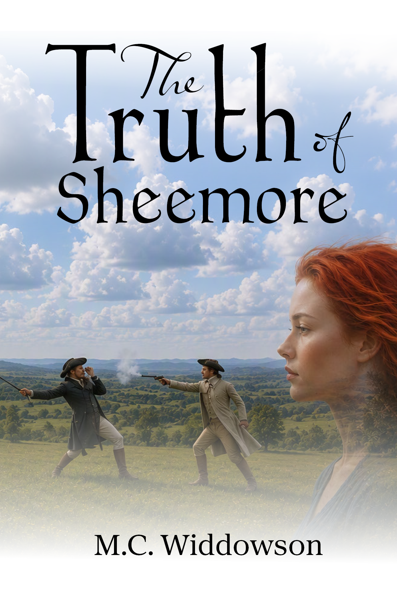

Welcome
Every family has stories waiting to be rediscovered.
Through archives, forgotten letters, old photographs and journeys across Ireland, I uncovered the lives behind my own family history. Those discoveries became The Forgotten Histories.
Inspired by real people, forgotten documents and family history.
Discover the SeriesEvery family has stories waiting to be rediscovered.
Through archives, forgotten letters, old photographs and journeys across Ireland, I uncovered the lives behind my own family history. Those discoveries became The Forgotten Histories.
